Prolog
📖 Was bisher geschah...
Bevor unser großes Abenteuer auf den Malediven beginnt, gab es schon viele kleine Kapitel, die unsere Geschichte geschrieben haben.
Denn unsere Geschichte beginnt nicht erst mit einer großen Reise.
Sie beginnt mit kleinen Momenten, gemeinsamen Erlebnissen, viel Lachen und Erinnerungen, die aus zwei Menschen langsam ein "Wir" gemacht haben. ❤️
🇩🇰 Die erste kleine Reise
Dänemark · 10.10.2025 – 12.10.2025
Unsere erste gemeinsame Kurzreise führte uns nach Dänemark.
Dort haben wir Olli & Pia besucht und einige neue Eindrücke gewonnen.
Wir haben Spaziergänge gemacht, waren im Zoo, haben Spiele gespielt und Abends hat uns der Whirlpool aufgewärmt.
Es war vielleicht keine große Weltreise, aber es war ein wichtiger Schritt: Der erste kleine Ausflug, den wir gemeinsam erlebt haben. ❤️
📸 Unsere Erinnerungen
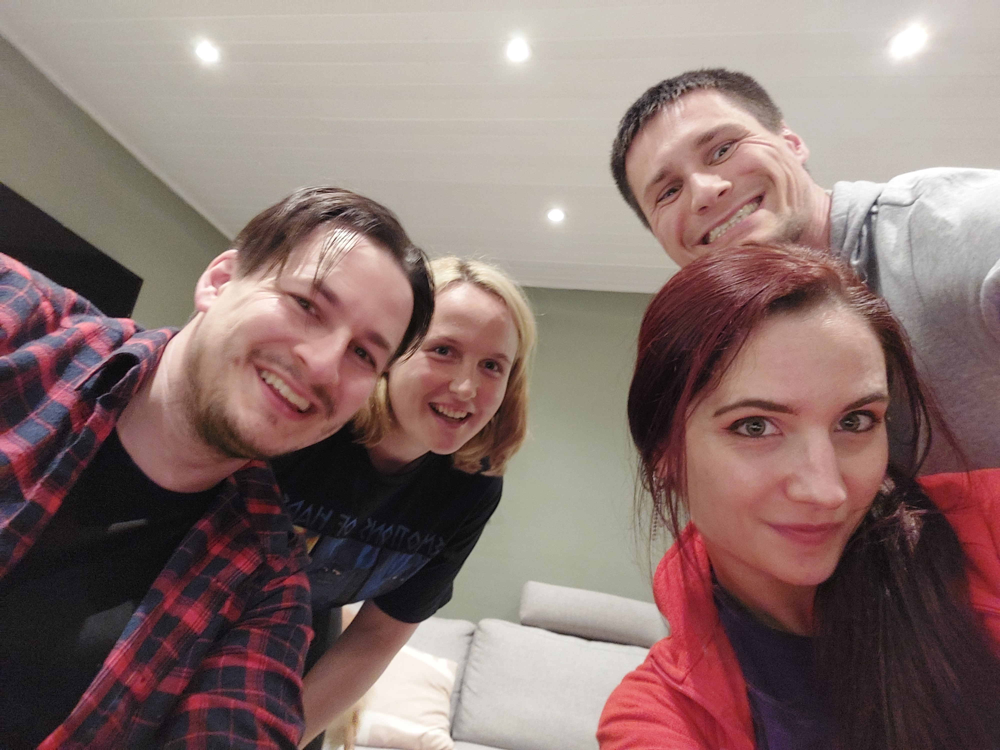
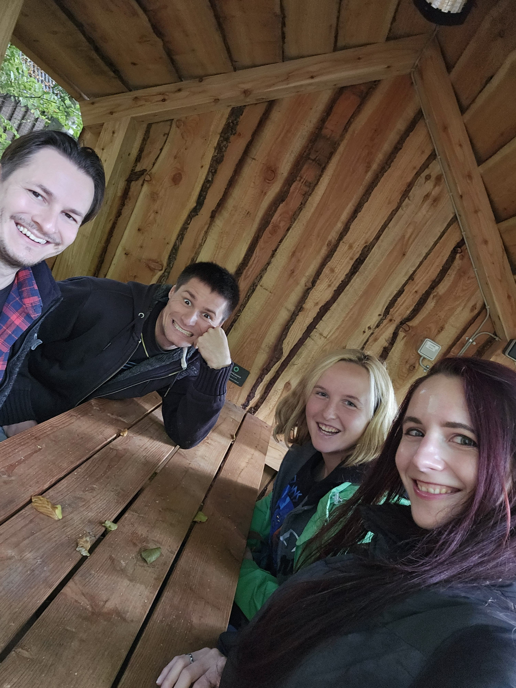
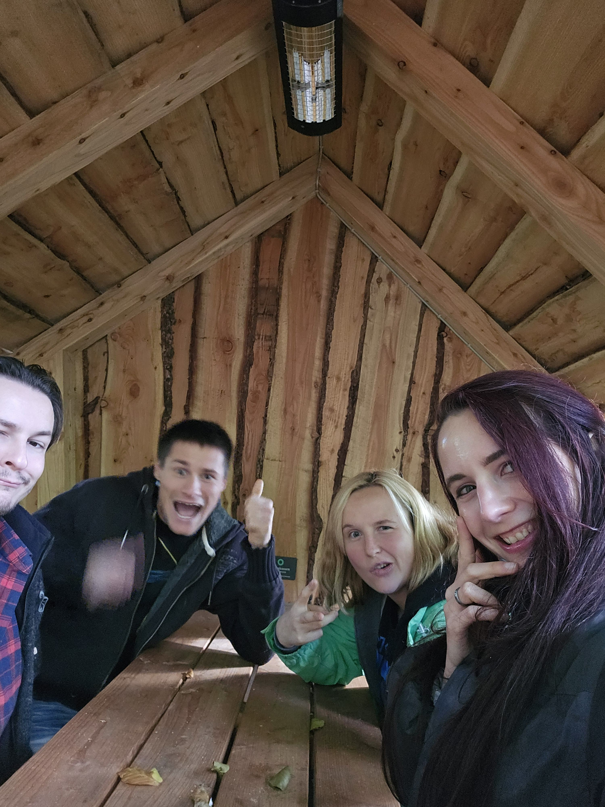
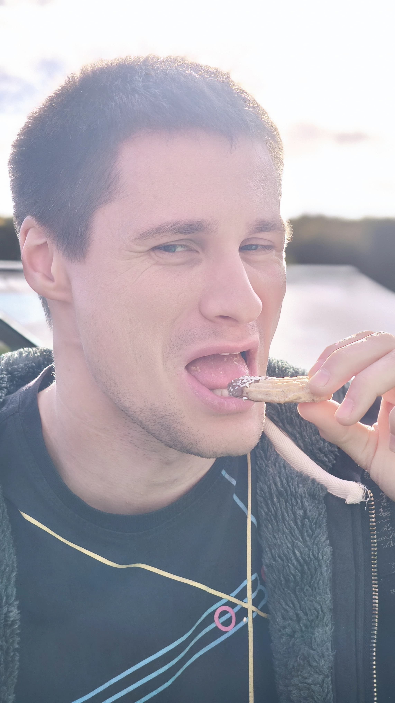
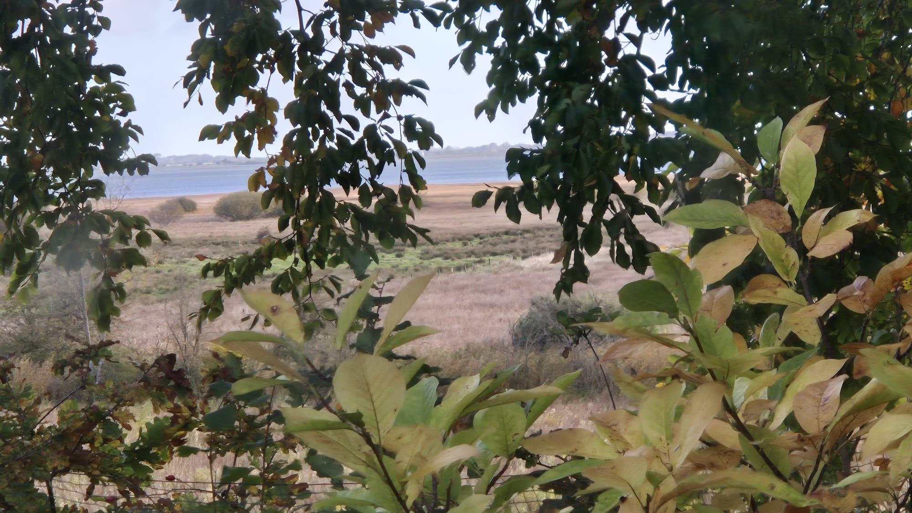
🎄 Unser erstes Date
Oberhausener Weihnachtsmarkt · 04.12.2025
Zwischen Lichtern, Weihnachtsduft und einer ganz besonderen Atmosphäre begann unser erstes richtiges Date.
Wir schlenderten gemeinsam über den Oberhausener Weihnachtsmarkt, führten viele Gespräche und sammelten die ersten besonderen Erinnerungen.
Danach ging unser gemeinsamer Abend noch weiter:
🎬 Zoomania
Ein gemütlicher Filmabend nach einem schönen ersten Date.
Vielleicht war es für andere nur ein normaler Abend, aber für uns wurde es ein weiterer kleiner Baustein unserer Geschichte. ❤️
🏮 China Lights im Kölner Zoo
26.01.2026
Unser zweites richtiges Date führte uns zu den China Lights im Kölner Zoo.
Zwischen leuchtenden Figuren, besonderen Farben und einer ganz eigenen Atmosphäre erlebten wir einen wunderschönen gemeinsamen Abend.
Es war ein weiterer Moment, der gezeigt hat, wie schön es ist, gemeinsam neue Dinge zu entdecken.
Viele kleine Erlebnisse wurden langsam zu einer großen gemeinsamen Geschichte. ❤️
📸 Unsere Erinnerungen
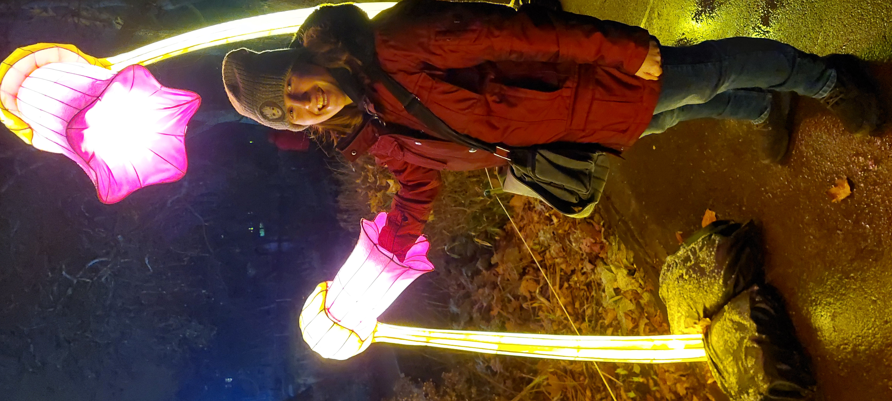
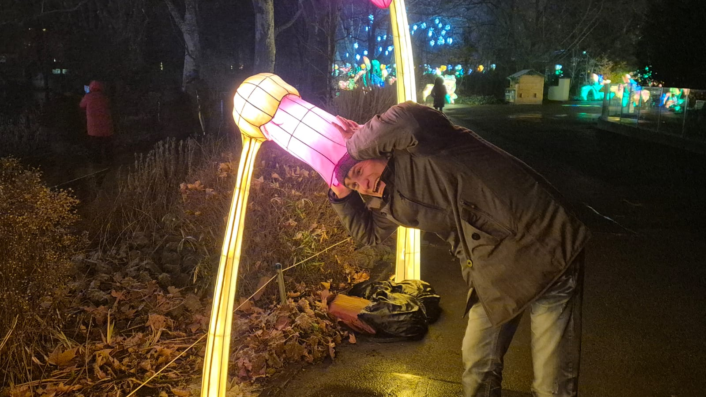
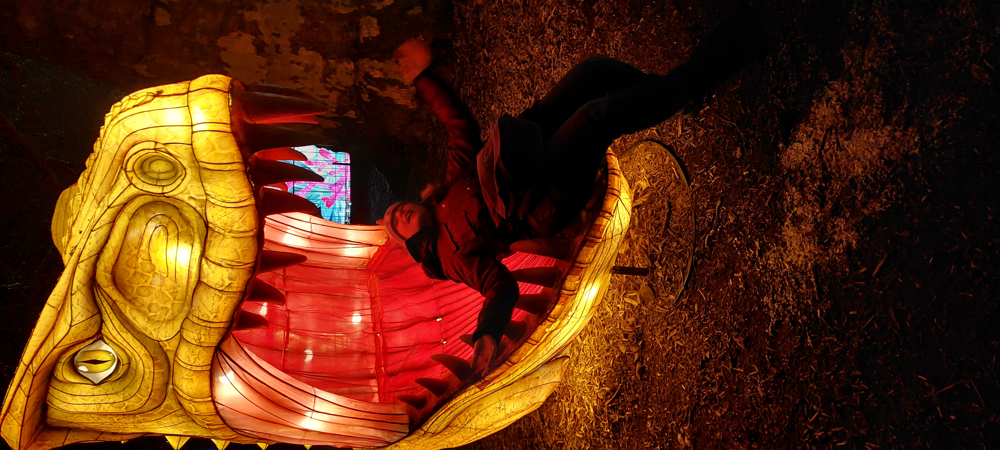
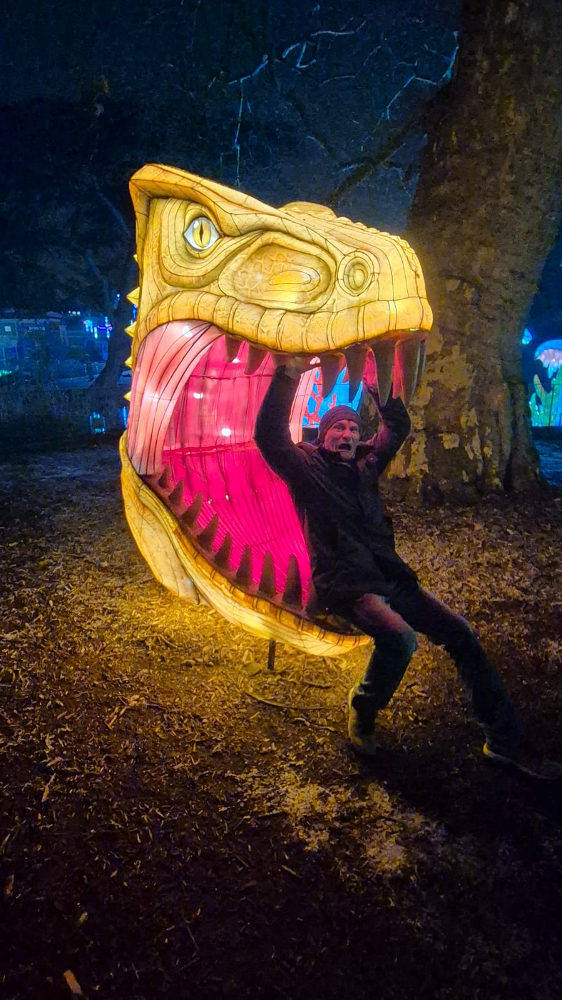
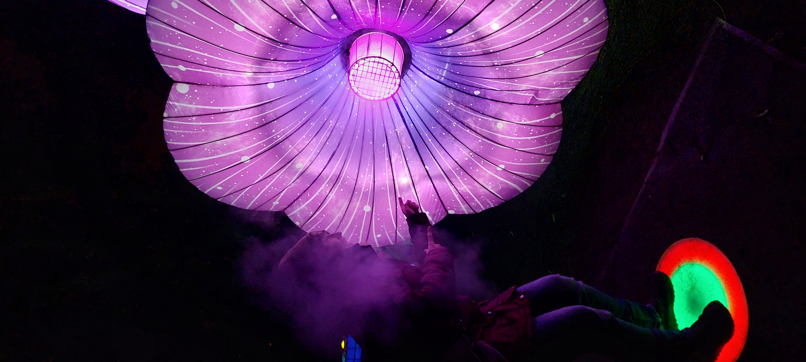
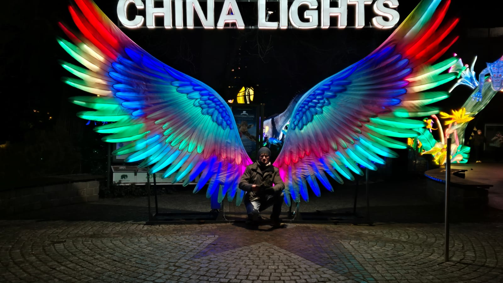
📺 Unsere ersten Serienabende
Gemeinsame Abende, Geschichten und viele kleine Momente
Natürlich gehören zu unserer Geschichte nicht nur Ausflüge und besondere Tage.
Auch die gemütlichen Abende zuhause wurden zu einem wichtigen Teil unserer gemeinsamen Zeit.
Unsere erste gemeinsame Serie führte uns nach Hawkins:
Stranger Things
Mit jeder Folge tauchten wir gemeinsam in eine neue Welt ein.
Aber es blieb nicht bei einem Abenteuer:
Auch die Realverfilmung von One Piece und Beastars auf Netflix wurden Teil unserer gemeinsamen Serienabende.
Mit Snacks, gemeinsamen Kommentaren und dem berühmten Satz:
"Eine Folge geht noch..." ❤️
🎲 Spieleabende mit Freunden & Familie
Wer stiehlt mir die Show
Unsere Geschichte bestand nicht nur aus Reisen und Dates, sondern auch aus vielen gemütlichen Abenden mit schönen Erinnerungen.
Bei Alex und Jenni entstanden einige dieser besonderen Momente.
Gemeinsam wurde gelacht, gespielt und natürlich durfte auch ein bisschen Wettbewerb nicht fehlen.
Mit dem Brettspiel von "Wer stiehlt mir die Show" wurde aus einem normalen Abend ein kleiner Spieleabend voller Spaß und guter Laune.
Genau diese kleinen Augenblicke sind es, die eine gemeinsame Geschichte besonders machen. ❤️
📸 Unsere Erinnerungen
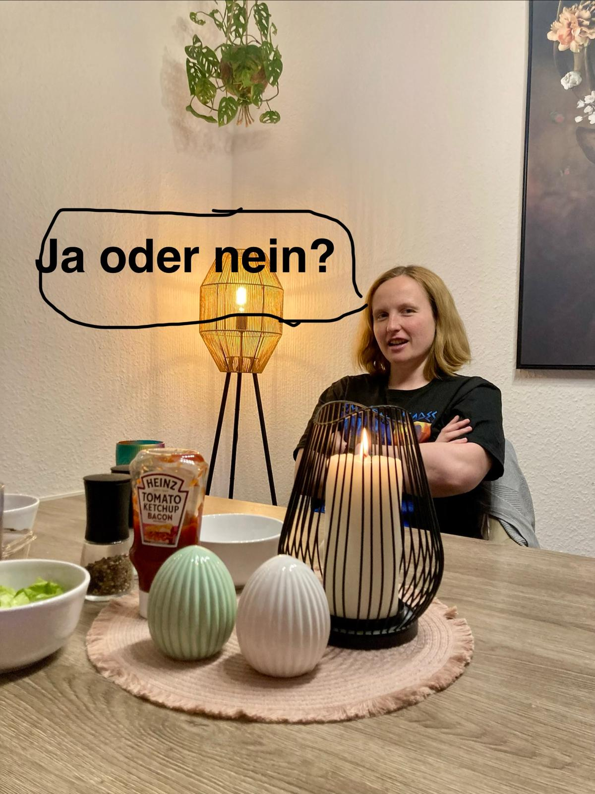
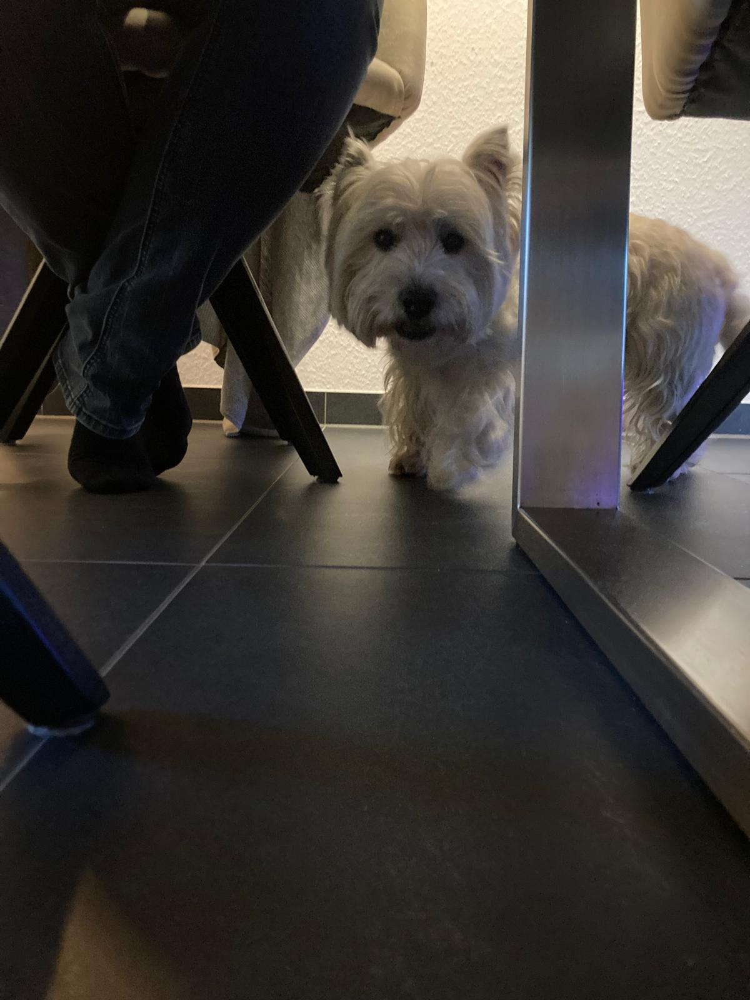
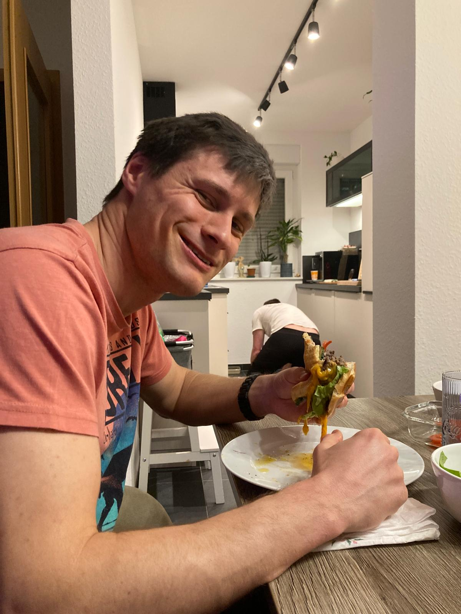
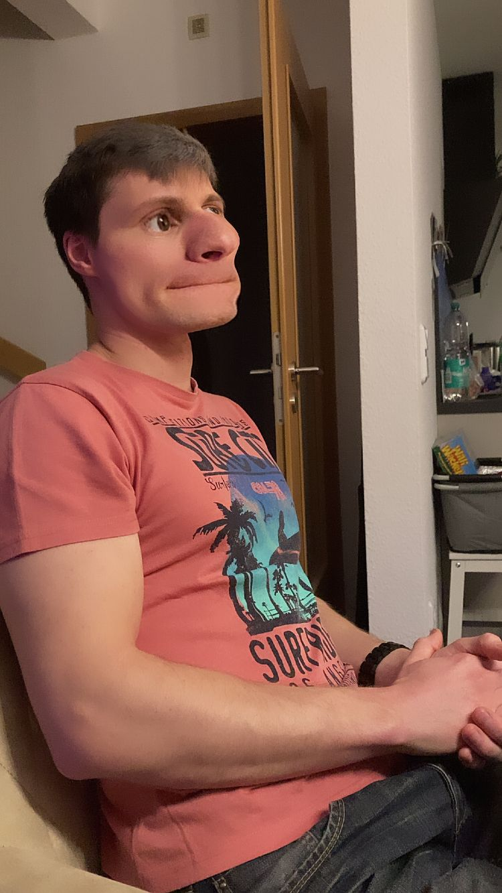
🐎 Ein Traum auf vier Rädern
Mustang Probefahrt · 27.02.–28.02.2026
Manchmal gibt es Momente, die man nicht vergisst.
Ein solcher Moment war unsere gemeinsame Mustang-Probefahrt.
Die Vorfreude war groß: Ein Traumauto, ein besonderes Erlebnis und die Möglichkeit, diesen Moment gemeinsam zu erleben.
Auch wenn es am Ende leider nur eine Übernachtung wurde, war diese Zeit trotzdem etwas Besonderes.
Denn es ging nicht nur um ein Auto, sondern um einen weiteren gemeinsamen Schritt und neue Erinnerungen, die wir miteinander teilen konnten. ❤️
❤️ Unsere gemeinsame Geschichte nimmt Form an
Seit dem 29.03.2026 sind wir ein Paar
Manchmal merkt man, dass aus vielen kleinen Momenten etwas ganz Besonderes entstanden ist.
Aus gemeinsamen Erlebnissen, langen Gesprächen, viel Lachen und immer mehr schönen Erinnerungen wurde unser gemeinsamer Weg.
Am 29. März 2026 begann offiziell unsere Zeit als Paar:
Dunja ❤️ Kevin
Seit diesem Tag gehen wir nicht mehr nur gemeinsam auf Abenteuer, sondern schreiben unsere Geschichte Hand in Hand als Paar.
Und das Schönste daran: Unsere größten Kapitel liegen noch vor uns. ❤️
📸 Unsere Erinnerungen
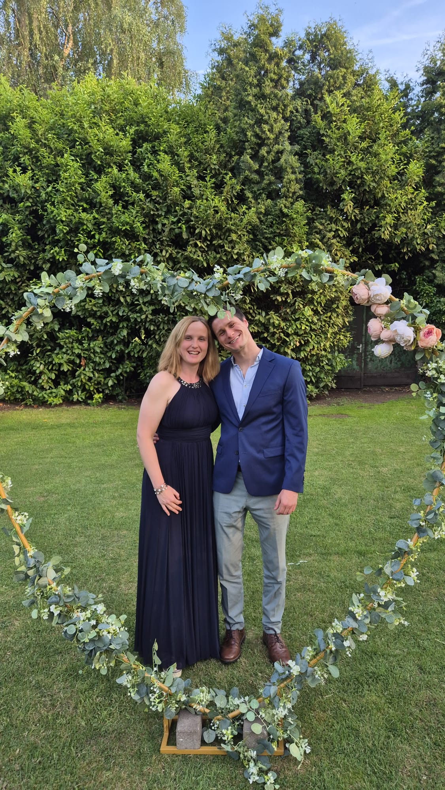

🐎 Unser erster gemeinsamer Urlaub
Mustang-Abholung & Heidelberg · 07.04.–10.04.2026
Nur wenige Tage nach unserem Start als Paar wartete schon das nächste Abenteuer auf uns.
Die Abholung des Mustangs war ein ganz besonderer Moment. Ein Traum wurde Wirklichkeit und wir durften ihn gemeinsam erleben.
Doch es blieb nicht nur bei der Abholung: Wir machten daraus unseren ersten gemeinsamen Urlaub.
🏨 Heidelberg
Vier Tage voller neuer Eindrücke, gemeinsamer Zeit und schöner Erinnerungen.
Ein ganz besonderer Tag führte uns in den Zoo Heidelberg.
Zwischen Tieren, schönen Momenten und vielen gemeinsamen Erlebnissen konnten wir einfach die Zeit zusammen genießen. 🦁❤️
✈️ Technik-Museum Sinsheim
Auch das Technik-Museum in Sinsheim gehörte zu unserem Abenteuer.
Zwischen beeindruckenden Fahrzeugen, Flugzeugen und Technikgeschichte gab es wieder viel zu entdecken und zu staunen.
Dieser Urlaub zeigte uns: Die schönsten Erinnerungen entstehen nicht nur an besonderen Orten, sondern vor allem mit dem richtigen Menschen an der Seite. ❤️
📸 Unsere Erinnerungen
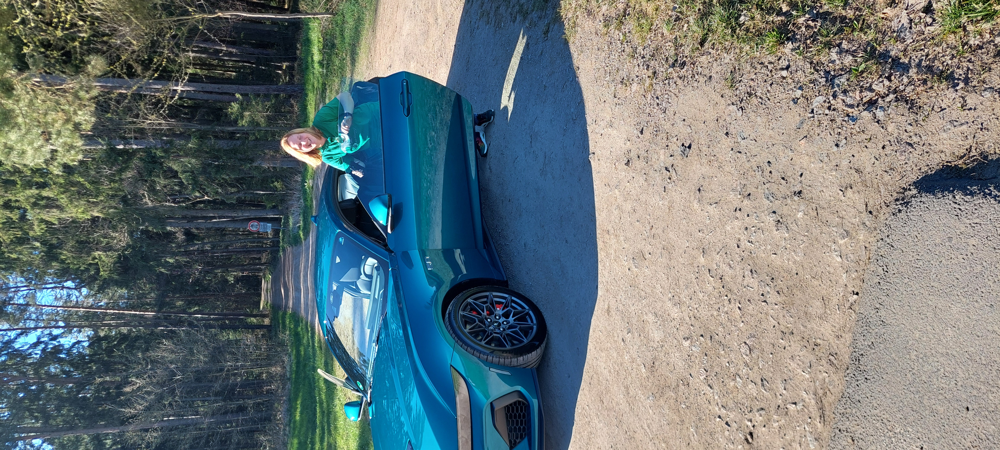
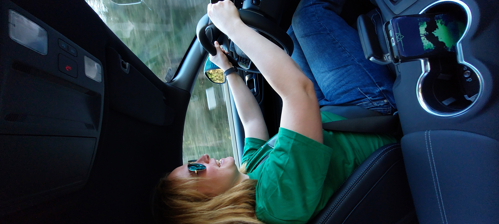
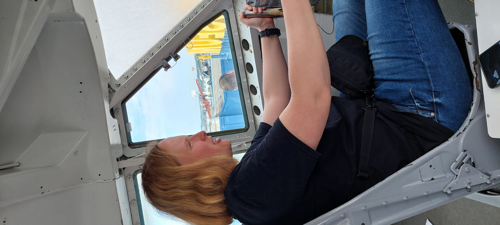
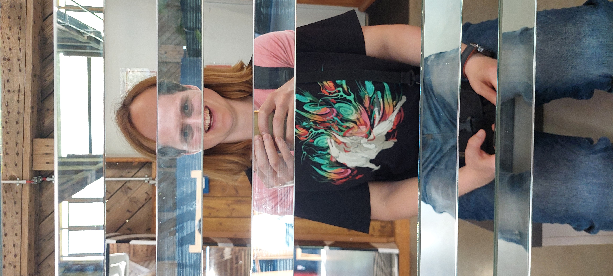
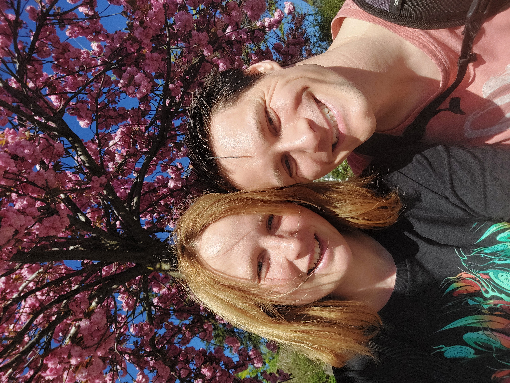
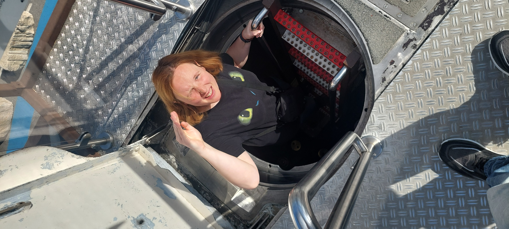
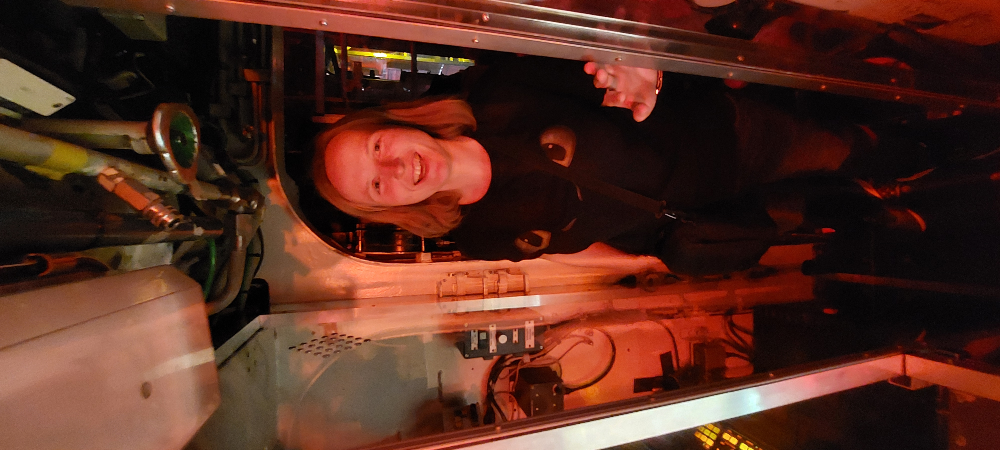
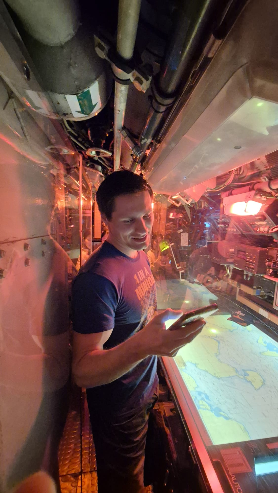
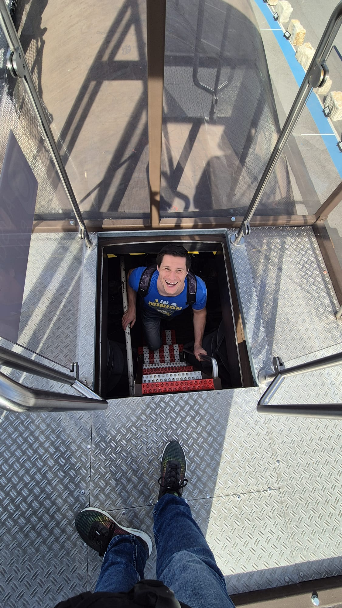
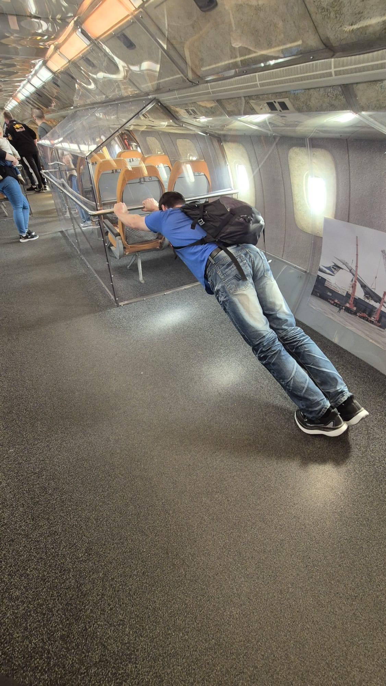
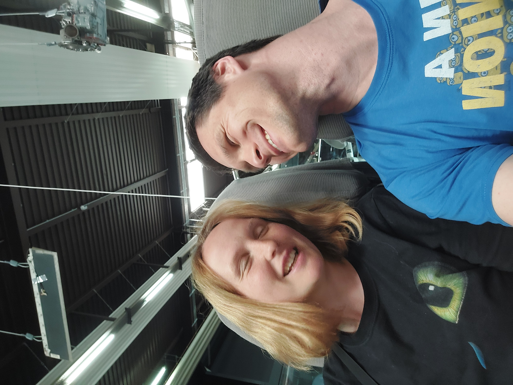
✨ Und die Geschichte geht weiter...
Das nächste Kapitel wartet bereits
Bis hierhin war unsere Geschichte voller kleiner und großer Momente: erste Reisen, besondere Tage, gemeinsame Abende und Erinnerungen, die uns immer näher zusammengebracht haben.
Doch dies war erst der Anfang.
Denn das nächste große Abenteuer steht bereits vor der Tür:
🌴 Malediven 2026
Unser erstes gemeinsames großes Abenteuer als Paar.
Ein neues Kapitel beginnt... ❤️